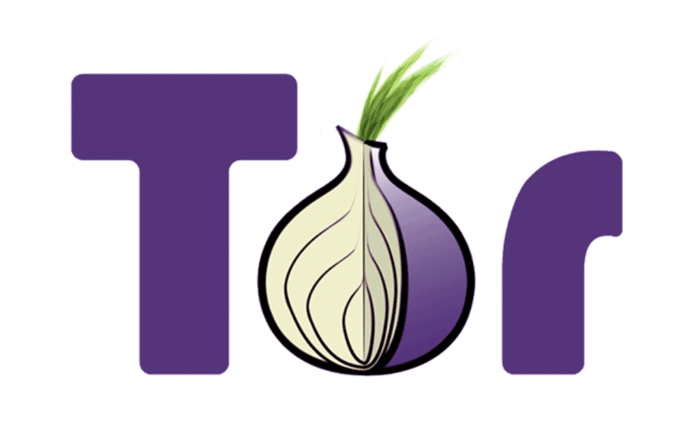

Hacking the Tor Network
Introduction
In a previous post, I presented the main techniques used to hack Tor networks and de-anonymize Tor users. Law enforcement and intelligence agencies consider “de-anonymization” of Tor users a primary goal. Authorities can try to implement techniques to break the encryption used to anonymize the traffic or to exploit vulnerabilities in one of the software modules that allows anonymizing the user’s online experience. There is also another option for authorities: to try secretly to destroy the overall Tor architecture or attack the hidden services to interfere with the traffic that flows to them.
Operation Onymous
Since the publication of the last post, a blow was dealt by the authorities to the cybercriminals that use the Tor network for illegal purposes. Police and intelligence agencies in a joint effort conducted the takedown of several illegal marketplaces as part of Operation Onymous. Coordinated by Europol’s European Cybercrime Centre (EC3), Operation Onymous hit the criminal organization that exploited the Tor network to manage black markets. The operation is considered an important success in the fight agaisnst cybercrime, but many experts have begun to question how law enforcement was able to locate the servers hosting hidden services and operators who ran the illegal activities. The developers of the Tor Project published an interesting blog post titled “Thoughts and Concerns about Operation Onymous“, in which they have explained the possible techniques adopted by authorities to locate the hidden services and de-anonymize the operators that managed the most popular black markets, including Silk Road 2.0.
“Over the last few days, we received and read reports saying that several Tor relays were seized by government officials. We do not know why the systems were seized, nor do we know anything about the methods of investigation which were used,” states the post.
Traffic analysis attack based on NetFlow
Exactly one week after the disclosure of Operation Onymous, a group of researchers presented the findings of a study conducted between 2008 and 2014 on the de-anonymization of the Tor users. The researchers analyzed the possibility to identify Tor users and reveal their originating IP addresses; they claimed to have obtained a 100 percent ‘decloaking’ success rate under laboratory conditions. The group led by professor Sambuddho Chakravarty, now researching Network Anonymity and Privacy at the Indraprastha Institute of Information Technology in Delhi, has published several papers on the topic over the last few years.
NetFlow
The study revealed that more than 81 percent of Tor clients can be de-anonymized by exploiting the NetFlow technology designed by Cisco for its network appliances.
NetFlow was introduced by the IT giant into its routers to implement an instrument to collect IP network traffic as it enters or exits an interface. It is a precious instrument to analyze the network traffic managed by the router and identify the causes of congestion. The protocol is widespread, and many experts consider it as a standard de facto. It actually runs by default in the hardware of many other network device manufacturers.
The technique proposed by Chakravarty and his team implements an active traffic analysis based on the introduction of specific traffic perturbations on server side. The researchers are able to de-anonymize Tor users by evaluating the effect of a similar perturbation on the client side through statistical correlation.
In a previous study, Chakravarty demonstrated that an attacker can monitor a significant percentage of the network paths from Tor nodes to destination servers by having access to a few Internet exchange points. The control of a few Internet exchange points allows the monitoring of a significant percentage of the network paths from Tor nodes to destination servers. This means that a powerful and persistent attacker can run traffic analysis attacks by observing similar traffic patterns at various points of the network.
The last study conducted by the team of researchers has revealed how to run an effective traffic analysis attack with less traffic monitoring capabilities, such as Cisco’s NetFlow, and run a traffic analysis attack on a large scale.
Previous research, in fact, suggested a significant effort to de-anonymize users on a large scale. The experts consider that previous techniques required an effort sustainable only by a government or by an intelligence agency. The researcher explained that a single AS (Autonomous System) could monitor more than 39 percent of randomly-generated Tor circuits.